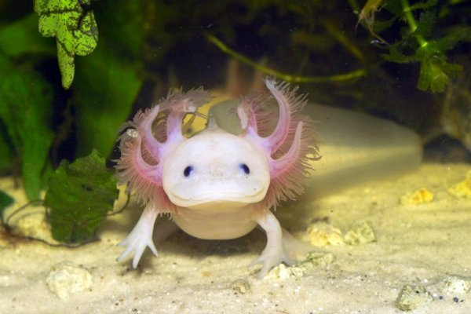

- Acuario adecuado: Un acuario es el hogar de tu axolote. Debe ser espacioso, con al menos 10 galones de capacidad por axolote. Si tienes más de uno, necesitarás más espacio. Los axolotes son animales acuáticos y pasan la mayor parte de su vida en el agua.
- Temperatura del agua: La temperatura del agua debe mantenerse en un rango de aproximadamente 16-18°C (60-64°F). Evita temperaturas más altas, ya que pueden ser perjudiciales para los axolotes
- Filtración del agua: Un sistema de filtración adecuado es esencial para mantener el agua limpia y saludable. Los axolotes son sensibles a la acumulación de amoníaco y otros productos químicos en el agua, por lo que la calidad del agua es crucial.
- Sustrato: Utiliza un sustrato suave en el fondo del acuario, como arena fina o grava, para evitar dañar la piel delicada de los axolotes. Evita sustratos abrasivos.
- Alimentación: Los axolotes son carnívoros y se alimentan de gusanos, larvas de insectos y pequeños peces. Puedes ofrecerles gusanos de sangre, lombrices de tierra y larvas de mosquito. Evita darles comida viva que sea más grande que su cabeza para prevenir problemas de alimentación. Algunos dueños también ofrecen pellets de comida para axolotes de alta calidad como suplemento.
- Limpieza regular: Debes hacer cambios parciales de agua en el acuario cada semana para mantener la calidad del agua. Retira los desechos y los restos de comida del fondo.
- No manipular en exceso: Los axolotes son animales delicados y su piel es muy sensible. Evita manipularlos innecesariamente y asegúrate de lavarte las manos antes de tocar el agua del acuario para no introducir contaminantes.
- Iluminación: Proporciona una iluminación tenue en el acuario. Los axolotes son sensibles a la luz brillante y prefieren un entorno más oscuro.
- Enriquecimiento del entorno: Proporciona escondites y plantas vivas o decorativas en el acuario para darles refugio y enriquecer su entorno.
- Salud y observación: Mantén un ojo atento a la salud de tus axolotes. Si notas cambios en su comportamiento, apetito o apariencia, consulta a un veterinario especializado en animales acuáticos lo antes posible.
